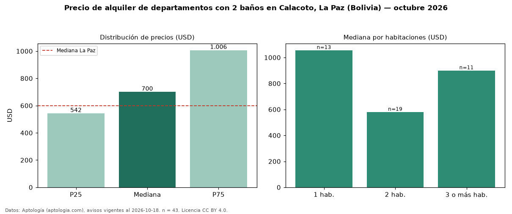

Precio de alquiler de departamentos con 2 baños en Calacoto, La Paz (Bolivia) — octubre 2026
USD 700 al mes es el canon mediano de departamentos con 2 baños en alquiler en Calacoto, La Paz (Bolivia) (n = 43 avisos). Eso es 12 % menos que la mediana de todos los departamentos en alquiler de Calacoto (USD 796, n = 128); este segmento reúne el 34 % de esos avisos. Por metro cuadrado, la mediana es USD 7,17/m² al mes (n = 43), 10 % por encima del conjunto de referencia (USD 6,50/m²). El área mediana anunciada es 95 m². El segmento con más oferta es el de 2 habitaciones (19 avisos, mediana USD 580); pasar de 1 habitación a 3 o más habitaciones cambia la mediana −15 %. La cuota de mantenimiento o condominio mediana declarada es USD 50,00 al mes (n = 25), aparte del canon. La mitad central de los avisos va de USD 542 a USD 1.006 (razón 1,9), una dispersión moderada. La mediana de todos los departamentos en alquiler de La Paz es USD 600 (+17 % de diferencia). Datos: Aptología (aptologia.com), CC BY 4.0 — https://www.aptologia.com/bo/alquiler/la-paz/calacoto. Archivos: PDF, CSV con las cifras y gráfica PNG.

| Avisos únicos | 43 |
|---|---|
| Percentil 25 | COP 542 |
| Mediana | COP 700 |
| Percentil 75 | COP 1.006 |
| Mediana por m² | COP 7 |
Fuente: avisos vigentes de portales inmobiliarios recopilados por Aptología, deduplicados (mínimo 30 avisos únicos por celda). Precios pedidos, no cerrados. Fecha: 2026-10-18.